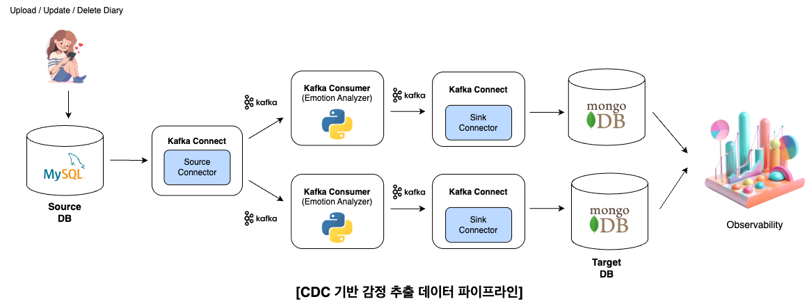

PROJECT 03 / DATA CONSISTENCY
GriDam
저장과 분석 사이의
데이터 일관성을 설계했습니다.
- 역할 / 작업
- 일기 저장 · 감정 분석 분리 / CDC 구조 설계
- 기간
- 2025.03 — 2025.06
조회 API 5초 → 1초
인덱스 / 캐시 최적화로 개선한 조회 응답 시간입니다.
LLM 기반 감정 일기 서비스PROBLEM → DECISION
DB commit과 event publish 사이의 불일치 위험을 고려했습니다.
문제 / PROBLEM
일기 저장과 감정 분석의 분리
일기 저장과 감정 분석을 분리하면서, DB commit과 event publish 시점이 일치하지 않을 수 있는 문제를 고려했습니다.
선택 / DECISION
MySQL을 기준으로 log-based CDC 선택
MySQL을 Source of Truth로 설정하고, commit과 event publish의 불일치 문제를 피하기 위해 로그 기반 CDC를 선택했습니다.
IMPLEMENTATION
저장된 변경 사항을 분석 흐름에 전달했습니다.
- MySQL
- Binlog
- Debezium
- Kafka
- Python Consumer
- MongoDB
Schema Registry + Avro를 적용하고, MySQL / MongoDB / Redis의 역할을 분리했습니다.

VERIFICATION
조회 응답 시간을 비교했습니다.
확인된 수치는 인덱스 / 캐시 튜닝 전후 조회 API 응답 시간입니다. CDC 일관성 검증 절차와 측정 조건은 이 포트폴리오에 포함하지 않았습니다.
RESULT
데이터 흐름을 분리하고 조회 성능을 개선했습니다.
일기 저장과 감정 분석을 CDC로 분리했습니다. 별도로 인덱스 / 캐시 최적화를 통해 조회 API를 5초에서 1초로 개선했습니다.
조회 성능 개선은 인덱스 / 캐시 최적화의 결과입니다.